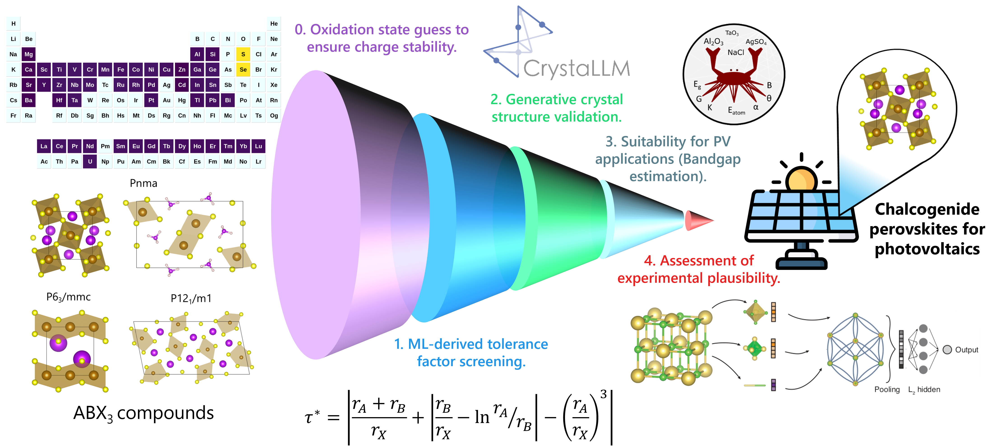

chalcogenide-perovskite-screening¶
ML-guided screening of chalcogenide perovskites as solar energy materials
Overview¶
Chalcogenide perovskites (ABX₃, X = S²⁻, Se²⁻) have emerged as promising absorber materials for next-generation photovoltaic devices, yet their experimental realization remains limited by competing phases, structural polymorphism, and synthetic challenges.
This repository presents a fully data-driven and experimentally grounded screening framework to assess the stability and experimental feasibility of chalcogenide perovskites, integrating interpretable analytical descriptors, machine-learning models, and sustainability metrics.
D. A. Garzón, L. Himanen, L. Andrade, S. Sadewasser, J. A. Márquez, "ML-guided screening of chalcogenide perovskites as solar energy materials", arXiv:2602.21812 (2026). https://arxiv.org/abs/2602.21812
Screening Pipeline¶
The framework chains five complementary computational and data-driven methods:

| Step | Method | Purpose |
|---|---|---|
| 1 | SISSO-derived tolerance factor (τ*) | Interpretable analytical descriptor for perovskite structural stability |
| 2 | CrystaLLM crystal structure generation | Generative prediction to validate corner-sharing perovskite-type topology |
| 3 | GCNN crystal-likeness scoring | Experimental plausibility and synthesizability assessment |
| 4 | CrabNet bandgap estimation | Composition-based prediction trained on experimental data |
| 5 | Sustainability analysis | Multi-objective ranking using HHI, ESG scores, and supply risk metrics |
Getting Started¶
Installation & setup
Set up the environment with uv or pip, configure API keys, and prepare the Jupyter kernel for running the analysis pipeline.
Pipeline Notebooks¶
Step-by-step analysis
Run the full screening pipeline — from SISSO feature engineering through CrystaLLM validation, CrabNet bandgap prediction, and sustainability ranking.
References & Citation¶
Methods and attribution
Key references for the methods used in this pipeline, BibTeX citation, acknowledgements, and license information.
Key Features¶
- Interpretable Descriptors: SISSO-derived tolerance factor (τ*) outperforming the classical Goldschmidt tolerance factor on experimental data
- Generative Structure Validation: CrystaLLM crystal structure generation to confirm perovskite-type topology
- ML Bandgap Prediction: CrabNet composition-based models trained on experimental halide perovskite and chalcogenide semiconductor data
- Sustainability Metrics: Multi-objective ranking integrating element scarcity (HHI), ESG risk, and supply chain metrics
- Synthesizability Scoring: GCNN-based crystal-likeness assessment for experimental plausibility
- Fully Reproducible: All data, code, and trained models are openly available under the MIT License
Citation¶
@misc{garzon2026mlguided,
title = {{ML-guided screening of chalcogenide perovskites as solar energy materials}},
author = {Garz{\'o}n, Diego A. and Himanen, Lauri and Andrade, Luisa
and Sadewasser, Sascha and M{\'a}rquez, Jos{\'e} A.},
year = {2026},
eprint = {2602.21812},
archivePrefix = {arXiv},
primaryClass = {cond-mat.mtrl-sci},
doi = {10.48550/arXiv.2602.21812},
url = {https://arxiv.org/abs/2602.21812},
}